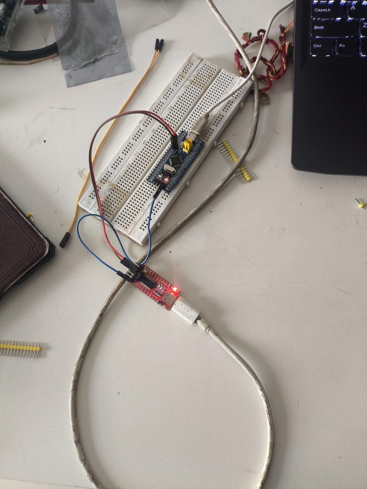
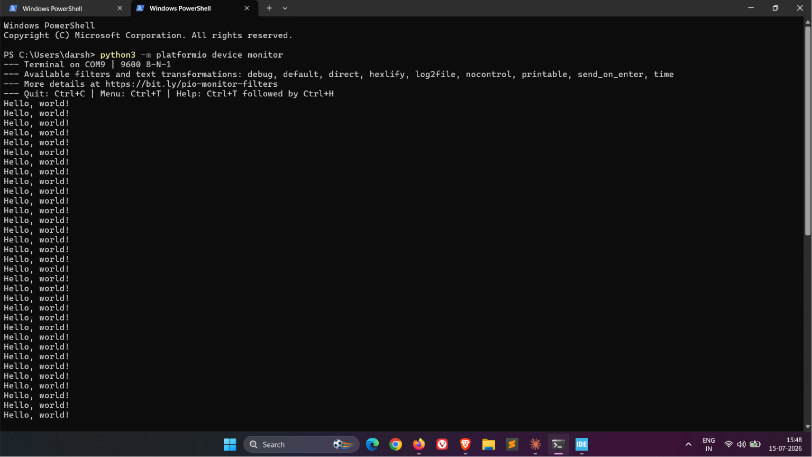

UART Hello World: Making the Blue Pill Talk Back
The LED could only tell me on or off. This time the Blue Pill got a voice — first through Serial.println(), then through a hand-computed baud rate divisor and a raw USART1 register.
Parts
- "STM32F103C8T6 Blue Pill"
- "HW-417C USB-to-UART adapter"
- "Micro-USB cable"
- "Breadboard + jumper wires"
The LED project proved the chain worked — toolchain, wiring, flashing — but an LED can only ever tell you one bit of information. The next project on the list needed the chip to actually say something: print text back to my laptop over serial, readable in a terminal. That's the whole point of this one. Once this works, every project after it can print-debug instead of guessing from blink patterns.

The nice part: this needed zero new hardware and zero new wiring. The idea list I'm working through was explicit about it — UART hello world reuses the exact GND/TXD/RXD wiring already sitting on the breadboard from the LED build. The two friction-fit pins are still seated in A9 and A10, the adapter still only contributes three wires, the Blue Pill still gets its own power from its own micro-USB cable. I unplugged everything between sessions, so the actual first step wasn't code, it was just plugging both boards back in and confirming the adapter still enumerated as the same COM port.

Round one: Arduino framework
Same instinct as the LED build — prove it end to end the easy way before touching registers. Serial on the bluepill_f103c8 Arduino variant maps to USART1 on PA9 (TX) / PA10 (RX) by default, which happen to be the exact two pins already wired to the adapter. No pin renegotiation needed at all:
#include <Arduino.h>
void setup() {
Serial.begin(9600);
}
void loop() {
Serial.println("Hello, world!");
delay(1000);
}Built clean on the first try — 1,076 bytes of RAM (5.3%), 9,808 bytes of flash (15.0%). Flashed with the usual BOOT0=1 + RESET dance, platformio run -t upload found the adapter on COM9, and stm32flash jumped straight into executing the program the moment the write finished, before I'd even flipped BOOT0 back. Opened a terminal on the same port and there it was:

python3 -m platformio device monitor picked up 9600 baud automatically — added monitor_speed = 9600 to platformio.ini so that command doesn't need a -b flag typed out every time.
Round two: bare metal
Same drill as the LED rebuild: drop framework from platformio.ini entirely, reuse the exact same linker script and startup file from the LED bare-metal build unchanged — that vector table and Reset_Handler aren't project-specific, they're just what has to run before main() on any bare program. The only genuinely new part this time is main() itself, and it's a real step up from toggling one GPIO pin: bring up a whole peripheral, USART1, from nothing but its register map.
Two clocks need enabling before anything else works — GPIOA's, so PA9 can even be reconfigured, and USART1's own:
RCC_APB2ENR |= (1u << 2) | (1u << 14); // IOPAEN + USART1ENPA9 has to switch from its reset-default floating input into alternate- function push-pull output, or USART1 can drive the pin at all. Each pin gets a 4-bit field in GPIOA_CRH — CNF then MODE — and alternate-function push-pull at 50MHz is CNF=10, MODE=11, nibble 0xB:
GPIOA_CRH &= ~(0xFu << 4);
GPIOA_CRH |= (0xBu << 4); // PA9: AF push-pull, 50MHz -> USART1 TX
// PA10 (RX) stays at its reset default: floating input. Untouched on purpose.The part I was least sure of going in was the baud rate register. The chip's still running on the default 8MHz internal HSI — no PLL configured, same as the LED build — and USART1 sits on APB2, so its clock is also 8MHz. The formula is USARTDIV = fCK / (16 × baud):
USARTDIV = 8,000,000 / (16 × 9600) = 52.08
mantissa = 52 (0x34), fraction = 0.08 × 16 ≈ 1
BRR = (52 << 4) | 1 = 0x341That puts the actual baud at roughly 9,604 instead of a clean 9,600 — about 0.04% off, well inside what a UART receiver tolerates. Enable the peripheral and its transmitter, then poll the TXE flag before every byte:
USART1_BRR = 0x341;
USART1_CR1 = (1u << 13) | (1u << 3); // UE + TE
static void usart1_write_char(char c) {
while (!(USART1_SR & (1u << 7))); // wait for TXE
USART1_DR = c;
}First upload attempt failed flat: stm32flash: Failed to init device. Took a second to place it — BOOT0 was still sitting at 0 from watching the Arduino version run normally, and flashing needs the chip back in its bootloader, BOOT0=1, before it'll listen at all. Flip it, press RESET, retry — clean upload, 172 bytes of flash, 0 bytes of RAM, and the same Hello, world! showing up on the same terminal a second later. Worth writing down since it's already the second time this exact "looks like a failure, is actually a boot-mode mismatch" moment has happened — next time it should be the first thing I check, not the last.
Both versions land on the same wire producing the same bytes, but the distance between them says a lot about what a framework is actually buying you. Serial.println("Hello, world!") is one call that hides a baud-rate divisor calculation, a GPIO alternate-function mode, a peripheral clock enable, and a busy-wait transmit loop — four things I had to get individually right by hand in round two, any one of which being wrong would've meant garbled output or silence with no error message pointing at why. Doing the math myself made the number on the datasheet ("USARTDIV = fCK / (16 × baud)") feel like something I actually own now instead of a formula I'd recognize if I saw it again. That's the whole reason I'm doing each of these twice.
Notes from readers
Comments — via GitHub